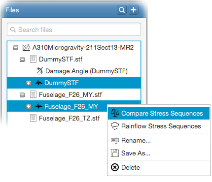

The generated stress sequences can be compared against each other by various selected criteria. Following video demonstrates how to do this.
For this, select the stress sequences that you want to
compare from the file tree and right-click. Select Compare Stress Sequences from the popup menu as follows;

This will open the stress sequences comparison input panel.